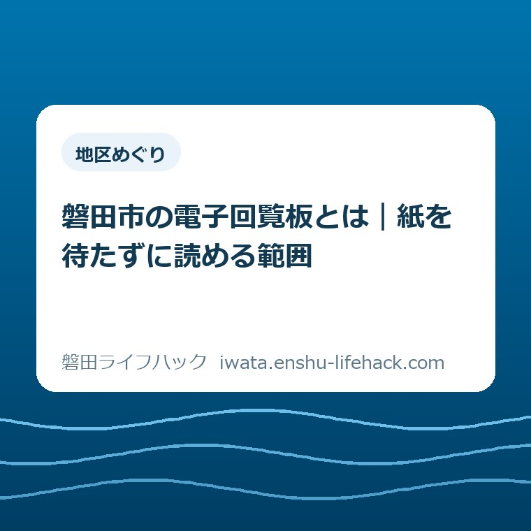

地区めぐり
磐田市の電子回覧板とは｜紙を待たずに読める範囲

この記事の要点
Q. 磐田市の電子回覧板で、紙の回覧は全部読めるの？
A. 磐田市の電子回覧板は、市内全域に配付・回覧する文書を電子化した公式ページです。紙が届く前でも掲載済みの文書を読めます。広報いわたや地区だよりは関連リンク先で確認します。自治会独自の連絡まで全部載るとは確認できません。公式ページを保存して、紙と併用するのが確実です。
回覧を回す人にも、読む人にも手間がある
磐田市の回覧のお知らせは、文書の種類や地区によって確認先が変わります。制度の申込み条件も個別に異なります。電子回覧板を読んだだけで、地域の連絡をすべて把握できるとは限りません。まず掲載範囲を知っておくと、紙を待つ必要がある情報と、先に読める情報を分けられます。
仕事から帰って家事を片付け、回覧を開く。家族が読む時間を残しつつ、次のお宅にも渡す。回覧には読むだけでなく、受け取り、保管し、回す手間があります。担い手がその段取りを続けていることを、便利なサイトの紹介だけで消してしまいたくありません。
大石浩之（磐田市／不動産業）です。私は、紙を早く回すことと、内容を十分に読むことを、一つの時間に押し込まなくてよくなる点を評価します。読む場所がもう一つあれば、紙を手元に置き続けずに、あとから家族で見返す選択ができます。
本記事は2026年10月2日に磐田市の公式ページを確認して書いています。紹介するのは新制度の開始ではなく、現在公開されている文書の入口と、その入口で読める範囲です。秋の予定を探す際も、見出しだけでなく掲載文書の対象と日付を確かめる使い方を提案します。
電子回覧板とは、市内全域向け文書の入口
磐田市公式「電子回覧板（自治会回覧板のデータ配信）」は、市内全域に配付・回覧する文書を電子化して掲載するページです。市内全域という対象の広さが、読み方の出発点になります。自治会という言葉が付いていても、各自治会の連絡を全部集めたページとは説明されていません。
公式ページの番号は1011756です。ページの更新日は2026年10月1日でした。10月2日の確認時には、令和8年10月1回目のPDFが掲載されています。10月1日はページの更新日であり、電子回覧板を初めて始めた日だとは書かれていません。開始日を推測して紹介することは避けます。
掲載された文書は、公式ページから添付PDFを開いて読みます。検索結果の短い説明だけを読む方法では、文書に書かれた申込先や対象を確かめられません。入口のページを開き、添付文書へ進むところまでが、内容を確認する一続きの動作になります。
「紙を待たずに読める」のは、サイトに掲載された分です。紙より何日早く掲載されるか、全世帯に届く前に必ず公開されるかは、今回の資料から確認できません。電子という名前から、即時配信や個別の通知まで備わっていると受け取らないようにします。
読むために見る場所は公式ページの添付PDFです。併せて、このページのQRコードを収めたExcelも置かれています。Excelは回覧文書の本文そのものとは役割が違います。スマートフォンで文書を読みたい人は、まずPDFへのリンクを選べばよく、QRコードの資料を先に開く必要はありません。

地区のお知らせは、地区だよりへ進む
磐田市公式「交流センターだより／地域づくり協議会だより」は、交流センターや地域づくり協議会の活動を紹介する別ページです。電子回覧板から関連情報として案内されています。市全域向けの回覧PDFと、暮らしている地区の活動を読む資料は、入口を分けて探す構成です。
10月2日の確認時には、御厨交流センターだより9月号、西貝交流センターだより9月号、長野地域づくり協議会だより9月号など、地区名の付いた添付資料がありました。本文で使う地区の例は、この一覧に掲載されている名称をもとにしています。地区ごとの行事内容や募集条件までは本記事で断定しません。
地区だよりを探すときは、住んでいる地区名と資料名を照合します。似た地区名の資料を選ぶと、読むことはできても生活圏の案内とずれる可能性があります。転入した家庭なら、住所の町名だけで判断せず、届いた紙に書かれた交流センター名や地区名を手がかりにする方法があります。
地区の資料は、号数や月の表示も確認します。ページにたどり着いた日と、文書が扱っている月は同じではありません。秋の行事を探している場合でも、9月号の文書内にある予定がすべて10月2日以降のものだとは限りません。行事日と申込期限を別々に見る必要があります。
磐田市内の地域の距離感は、市役所と四つの支所から暮らしの距離を考える記事でも整理しています。広い市域の共通情報を知ることと、自分が歩いて行ける場所の情報を知ることは、生活の中で役割が違います。地域の活動を探す際は、地区名のある資料まで進むと目的を絞れます。
広報と自治会独自の連絡は、同じ扱いにしない
磐田市の電子回覧板では、「広報いわた」などの広報誌は関連情報のリンク先から読むよう案内されています。電子回覧板の添付PDF一つを開けば、広報誌も地区だよりも一度に読み終えられる構成ではありません。資料ごとの入口があることを先に知ると、探し漏れを減らせます。
市全域のお知らせ、地区の活動、自治会内の連絡。この三つは、住民にはどれも地域情報ですが、掲載元が同じとは限りません。電子回覧板に見当たらない文書があっても、すぐに「配信漏れ」と決めつけず、地区だよりや紙の連絡を確認する余地があります。
たとえば班内の役割分担や近隣だけに伝える連絡が、すべて電子回覧板に掲載されるとは、公式の説明から確認できません。これは特定の自治会の実例ではなく、掲載範囲を考えるための例です。個別の地域で何を紙で知らせるかは、その地域の案内に沿って確かめてください。
掲載されていないことと、予定が存在しないことは別です。地域独自のお知らせについては、電子回覧板を検索して見つからなかったという理由だけで判断できません。紙を回す手順も、公式ページを読んだことを理由に独断で省略せず、地域の決め方に従う必要があります。
市の窓口に関わる内容が見つかった場合は、回覧の文書を読んでから担当先を確かめます。磐田市の4支所窓口でできることは、移動先を考える際の補助になります。地区のお知らせの確認先と、行政手続きの受付先を混同せず、文書の連絡先を基準にしてください。
スマートフォンでは「何月分か」から読む
電子回覧板のPDFをスマートフォンで読む際は、資料名の年月と回数を確かめてから、必要な内容に進むと読み違いを減らせます。検索で開いた画面をそのまま最新情報とみなさず、公式ページの掲載一覧を一度見る方法です。端末の操作はブラウザーや機種によって異なります。
PDFを開いたら、最初に文書の名前を確認します。続いて、自分や家族が対象になる案内かを読みます。市内全域に回覧されることは、どの案内も全住民が申込みできることを意味しません。年齢、居住、参加方法などの条件がある場合は、文書に書かれた範囲で判断します。
予定を見つけた場合は、開催日と申込期限を一組で扱います。開催日に間に合えば申込みも間に合うとは限りません。紙をあとから読み直す時間が取れない家庭では、予定の名前だけを覚えるより、締切と問い合わせ先を一緒に控えるほうが、その後の確認につながります。
小さな文字が読みにくいときは、PDFを拡大します。画面全体を一枚のまま読もうとすると、対象者の説明や但し書きを見落とすことがあります。通信や端末の事情で開けない場合もあるため、読めなかったことを本人の努力不足にしないで、紙で読む方法を残しておくと無理がありません。
保存したPDFは、保存時点の文書です。更新後の文書へ自動的に切り替わるとは限りません。申込みや参加を決める前には、保存した資料だけでなく公式ページへ戻り、掲載内容を確かめます。PDFを残すことと、最新の入口を残すことを分けて考えると、古い資料の使い続けを防げます。

良い点——紙を回す時間と、読む時間を分けられる
電子回覧板の良い点は、掲載済みの市全域向け文書を、自分の都合に合わせて読めることです。紙が手元にある短い時間だけに読書の機会を限らなくて済みます。次のお宅へ回す作業を続けながら、内容は別の時間に確認するという使い分けができます。
私は、情報を受け取る時刻が家族でそろわなくてもよくなる点を評価します。仕事や家事の区切りは一人ずつ違います。同じ公式ページを家族で共有できれば、紙を持つ人だけが内容を読み、別の人は伝聞で済ませる形を減らす手がかりになります。
もう一つの利点は、文書の出どころへ戻れることです。誰かが短く要約した連絡は便利ですが、申込条件が省かれる可能性があります。私は、家族に予定を伝える際に、要約だけでなく公式ページへのリンクも残すと、必要な人が原文を確認できると考えます。
紙で読みたい人と画面で読みたい人のどちらかを選ばせず、入口を増やす使い方にも価値があります。電子回覧板を使う家庭があっても、紙の回覧を支える人の作業が直ちになくなるとは限りません。便利さの評価と、地域で続いている配付の負担は、両方を見ておきたいところです。
注文したい点——「全部見たつもり」を防ぎたい
電子回覧板への注文したい点は、掲載範囲と別リンクの役割が、初めて開いた人にも伝わることです。市のページには対象の説明と関連情報があります。それでも、電子回覧板という名称だけを聞いた読者が、地区の連絡も一括で読めると受け取る可能性は残ります。
私は、便利な仕組みほど「ここにないものは何か」も並べて伝えたいと考えます。全域向け文書を読む入口、地区の活動を読む入口、地域で確認する連絡。この区別を家族の中でも共有できると、検索で見つけた一つのPDFに頼り切ることを防げます。
自動通知の有無や、地区独自の連絡がどこまで載るかは、今回の資料だけではわかりません。私は、紙を確認する頻度をどこまで減らしてよいのか、まだ迷います。便利だから紙を見なくてよい、と言い切るには材料が足りません。だから記事では、公式の掲載範囲を越えた約束をしません。
デジタル化したから、読んだことまで丸投げしていいわけではない。私はそう考えます。開ける場所ができても、対象と期限を判断する作業は残ります。電子回覧板を「地域情報は全部面倒を見てくれる道具」にしてしまうと、かえって確認する材料を減らしてしまいます。
対案・結論——今日の一歩は公式ページの保存
磐田市の電子回覧板を使う今日の一歩は、公式ページをブラウザーのお気に入りに保存することです。個々のPDFだけではなく、掲載一覧のある入口を保存します。スマートフォンの操作名は機種によって違うため、お気に入りやブックマークの機能を使ってください。
保存名は「磐田市・電子回覧板」のように、あとで探せる言葉にします。複雑な情報管理を始める必要はありません。今日すべての文書を読む時間がなくても、次に回覧の内容が気になったとき、公式の入口へ戻れる状態を一つ作れば、使い始める準備になります。
読む時間ができたら、掲載一覧で必要な年月と回数を選びます。地区の活動が目的なら、関連情報から地区だよりへ進みます。紙が回ってきたときに、自分の地域の連絡と見比べると、電子で補える範囲と、地域の案内で確認する範囲を分けやすくなります。
家族へ共有する場合は、「公式ページに載っていた」と伝えるだけでなく、何月の何回目を見たかも添えると照合できます。文書内の予定を共有するなら、資料の名前、対象、日付、連絡先を残します。家族全員に一律の管理方法を押し付けず、確認する人が原文へ戻れる形で十分です。
地域活動を探すときは、参加と開催を分ける
磐田市の地域活動を調べるときは、すでにある催しへ参加することと、自分たちで催しを企画することを分けて考えると、読む資料の目的がはっきりします。電子回覧板や地区だよりはお知らせを読む入口です。行事の実施条件は、個々の案内や担当先で確認します。
活動の企画を考えている人には、磐田市の文化財出前講座で幹事が用意する相談事項もあります。回覧を見て興味を持った段階と、会場や参加者を決めて相談する段階は別です。知らせを読んだことを、そのまま開催の承認や申込完了と受け取らないようにします。
地域の案内を受け取る人と、催しの担当者が同じとは限りません。問い合わせるときは、電子回覧板全体の話ではなく、どの文書のどの部分を確認したいかを伝えると話を絞れます。日付や対象が不明なら、そのまま不明と伝え、文書に書かれた連絡先へ確認してください。
大石の視点——便利さは、確かめる力を残して使う
私は、電子回覧板を紙の回覧と競争させる必要はないと考えます。読める機会を増やすことと、地域の連絡を確実に渡すことは、どちらも暮らしを支えます。画面が使える家庭は公式ページを読む。紙が必要な家庭は紙で読む。その両方に、対象と期限を確かめる余地を残したいと思います。
公式資料の掲載範囲を踏まえ、私は、便利な入口を増やしながら読む人の判断を残す使い方を提案します。不動産業の立場で暮らしの段取りを見ると、道具の名前より、家族の誰が原文へ戻れるかという条件のほうが、使い続ける助けになると考えます。
電子回覧板を保存しても、すべてのお知らせを読んだことにはなりません。けれど、紙を待たずに確認できる入口を一つ持てます。まずはそれで十分です。掲載状況や制度の個別条件は変わるため、最後は磐田市公式の電子回覧板で最新の文書を確認してください。
FAQ——電子回覧板のよくある疑問
磐田市の電子回覧板について、掲載範囲、更新日、保存方法の疑問を整理します。以下は2026年10月2日に確認した公表情報と、読み方の提案です。
電子回覧板だけで自治会の連絡は全部わかりますか？
磐田市公式で説明されている対象は、市内全域に配付・回覧する文書です。地区だよりは関連リンクから読めますが、自治会独自の連絡まで全部掲載されるとは確認できません。地域の案内や紙の回覧も併用し、掲載状況は市公式ページで確認してください。
10月1日に新しく始まったサービスですか？
2026年10月1日は、確認した電子回覧板ページの更新日です。新制度の開始日とは記載されていません。10月2日の確認時には令和8年10月1回目のPDFが掲載されていました。更新日と開始日を分け、最新の掲載内容は市公式ページで確認してください。
スマートフォンでは何を保存すればよいですか？
まず電子回覧板の公式ページをお気に入りやブックマークへ保存する方法を提案します。個別のPDFは保存時点の資料で、更新内容へ自動的に切り替わるとは限りません。読むときは公式の掲載一覧へ戻り、年月、対象、行事日、申込期限を確認してください。
参考にした公式情報
- 電子回覧板（自治会回覧板のデータ配信）／磐田市（2026年10月2日確認）
- 交流センターだより／地域づくり協議会だより／磐田市（2026年10月2日確認）
最終確認日：2026-10-02 ／ 本記事は公表情報と執筆者の見解を分けて記載しています。制度・数値・公開状況は変更される場合があるため、最新情報は磐田市公式ページでご確認ください。

著者：大石浩之／磐田市／不動産業・宅地建物取引士。著者プロフィール